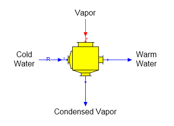

Surface Condenser A surface condenser station is used to condense vapor without any direct contact between the vapor and the cooling water (see Contact Condenser Features for condenser with direct contact between the vapor and cooling water). The surface condenser shape provided with Sugars is shown below.

General Features Cold water enters port 1 (zoom in to see port numbering) and vapor enters port 0. Only one vapor flow into port 0 and one cold water flow into port 1 is allowed. The properties of a surface condenser are similar to a heat exchanger. Vapor flashing can occur in the cold water flow if the flow stream temperature of the water out is above the vapor saturation temperature for the pressure of the cold water flow stream. The vapor flow will completely condense if the cold water temperature is low enough and the quantity of the cold water is sufficient to remove the latent heat from the vapor. If there is insufficient cold water to condense the vapor, only a portion of the vapor will be condensed. The quantity of cold water needed to condense the entire vapor can be calculated by Sugars if the proper data is entered on the Surface Condenser Properties window to cause the cold water to be a required flow.
A surface condenser can be used for pressure feedback when the vapor input flow is a pressure feedback flow and the internal pressure of the surface condenser defines the feedback pressure. The internal pressure is defined on the Surface Condenser Properties window.
The surface condenser can be turned off by not selecting any of the entry fields with a check box; that is, all fields with a check box are unchecked. This will make the cooling water flow into port 1 a required flow with 0.0 flow rate and the vapor flow into port 0 will pass through the surface condenser without any change in the flow.